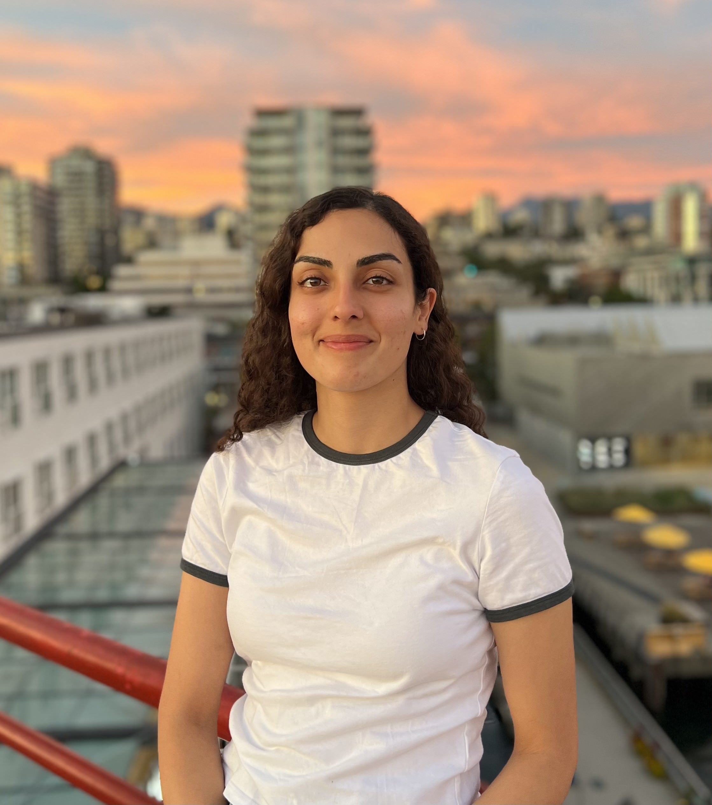

I am a third-year PhD student at the University of Alberta under the supervision of
Dr. Thomas Hillen
.
Email: negar3 [at] ualberta [dot] ca
Negar Mohammadnejad
PhD Student · Mathematical Biology

Research Interests
Mathematical biology, cancer cell modeling, partial differential equations.Education
MSc in Mathematics,
University of Manitoba (2021–2023)
BSc in Mathematics,
Shahid Beheshti University (2016–2020)
Papers
-
Travelling Wave Solutions in a Mathematical Model for Oncolytic Virotherapy
Negar Mohammadnejad, Thomas Hillen. Preprint. -
Stacked Waves and Qualitative Analysis of an Oncolytic Virus–Immune Model
Negar Mohammadnejad, Thomas Hillen. Preprint. -
Qualitative Optimization of Oncolytic Virotherapy and Immune Therapy Combination Treatments
Negar Mohammadnejad, Thomas Hillen. Mathematical Biosciences and Engineering, 2026, 23(2): 388–420. -
Positive Singular Solutions of a Certain Elliptic PDE
Journal of Mathematical Analysis and Applications, 2026, 555(1), Article 130033.
Teaching
-
Fall 2025-Winter 2026 (University of Alberta):
Math 300 — Advanced Boundary Value Problems